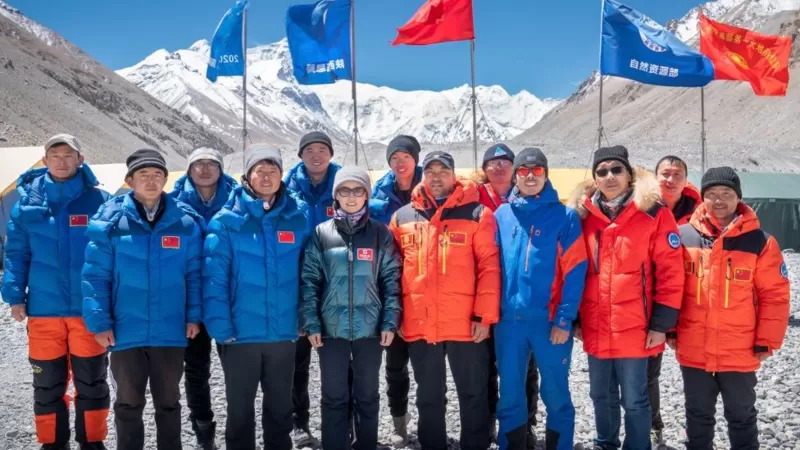
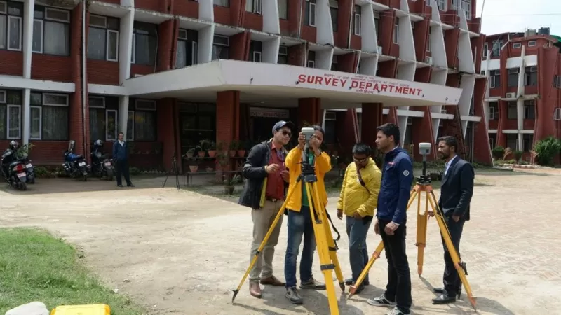

Некоторые геологи полагали, что высота горы могла измениться после землетрясения 2015 года
С 1954 года, когда соответствующая информация была предоставлена Индией, в мировых справочниках значилось ровно 8848 метров.
При этом Китай с 2005 года до последнего времени указывал высоту в 8844,43 метра (то есть на четыре метра ниже оценки индийских экспертов, с которыми соглашался и Непал), полагая, что шапку из льда и снега на вершине засчитывать не следует.
Теперь китайская сторона согласилась с точкой зрения Непала, специалисты которого впервые провели собственные оценки высоты Эвереста.
Кроме того, некоторые ученые предполагали, что высота горы могла уменьшиться примерно на метр из-за сильного землетрясения, случившегося в регионе в 2015 году.
Подземные толчки магнитудой 7,8 привели к гибели более 9 тыс. человек на территории Непала, они также вызвали сход лавины, под которую попал базовый лагерь альпинистов на Эвересте. По меньшей мере 18 человек погибли.
Некоторые ученые предположили, что в результате этого землетрясения снежная шапка на Эвересте могла немного просесть. Ранее было установлено, что после этого стихийного бедствия высота некоторых других пиков в Гималаях действительно снизилась, однако они находились к северу от Катманду, то есть ближе к эпицентру землетрясения. Скажем, горы в районе гряды Лангтанг стали ниже примерно на метр.
Джомолунгма, как и весь Гималайский хребет, сформировалась 50-60 миллионов лет назад в результате столкновения Евразийской и Индийской тектонических плит, и, предположительно, продолжает расти примерно на полметра за сто лет. Но землетрясения способны частично обращать процесс роста гор вспять.
"Землетрясение 2015 года - это тоже одна из основных причин, по которым мы решили снова измерить гору", - рассказал Би-би-си представитель управления геодезии и картографии Непала Дамодар Дхакал.
В ходе прошлогоднего визита китайского президента Си Цзиньпина в Непал стороны договорились совместно провести высокоточное измерение, дабы покончить с разночтениями и неясностями.
Непальский геодезист Химлал Гаутам потерял большой палец на ноге из-за обморожения, полученного при установке оборудования на вершине Эвереста.
"Для других подняться на Эверест и есть главное достижение, а для нас это было лишь начало", - рассказал он Би-би-си.
Прежде Непал не измерял высоту горы, полагаясь на индийские данные, рассказал Би-би-си Дхакал. Но теперь его агентство располагает командой квалифицированных специалистов с альпинистской подготовкой.
Высота гор измеряется от уровня моря при помощи цепи измерительных точек, находящихся в прямой видимости друг от друга, и сложных тригонометрических расчетов. Непальцы считали от Бенгальского залива, китайцы от Желтого моря.
Непальские геодезисты поднимались на вершину в прошлом году, китайские - в мае нынешнего года, став единственными людьми, побывавшими на вершине Эвереста после начала пандемии коронавируса.
"После того как маяк был установлен на вершине, исследователи замеряли образовавшиеся треугольники не менее чем на шести точках, расположенных ниже, с помощью тригонометрических формул", - объяснил китайской газете "Чайна дейли" сотрудник Академии геодезии и картографии КНР Цзян Тао.
По его словам, для большей точности использовались и данные систем спутниковой навигации, в частности, китайские специалисты полагались на собственную систему "Бэйдоу", созданную КНР в качестве альтернативы американской GPS.
Замеры производились ночью (в 03:00 по местному времени), чтобы избежать искажений в работе аппаратуры, которые вносит солнечный свет. Результаты, полученные китайскими и непальскими исследователями, совпали.
Гора названа в честь британского военного географа полковника Джорджа Эвереста, исследовавшего регион в бытность главным геодезистом Индии в 1830-1843 годах. Известна также как Джомолунгма (по-тибетски) и Сагарматха (по-непальски).
До пандемии Covid-19 альпинисты поднимались на нее как из Китая, так и из Непала. Первыми стали новозеландец Эдмунд Хиллари и непалец Тенцинг Норгей 29 мая 1953 года. К настоящему времени высочайшую вершину мира покорили свыше девяти тысяч человек, около 300 горовосходителей погибли.
На самом верху находится площадка из снега и льда, на которой могут одновременно уместиться не больше шести человек. Иногда альпинистам приходилось ждать своей очереди.